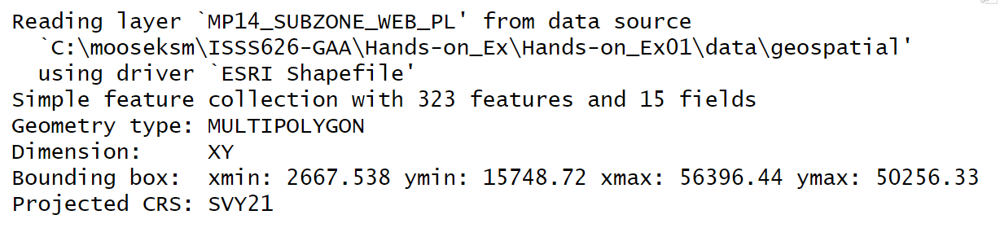
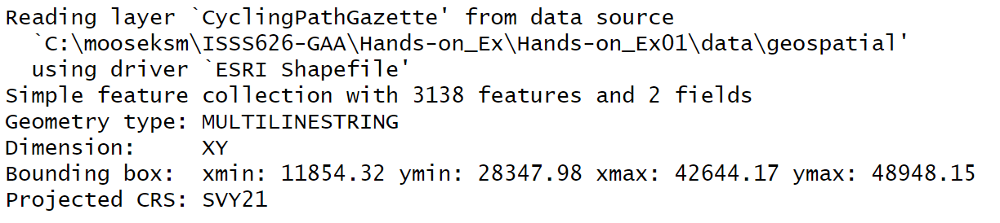

pacman::p_load(sf,tidyverse)Hands-on Exercise 1
Geospatial Data Science with R
1.1 Learning Outcomes
Geospatial Data Science is a process of importing, wrangling, integrating and processing geographically referenced datasets. In this hands-on exercise, I will perform geospatial data science tasks in R using the sf package and acquire the following competencies:
- install and load sf and tidyverse packages into the R environment
- import geospatial data using appropriate functions of sf package
- import aspatial data by using appropriate function of readr package
- explore the content of simple feature data frame by using appropriate Base R and sf functions
- assign or transform coordinate systems by using appropriate sf functions
- convert aspatial data into a sf dataframe by using appropriate functions of the sf package
- perform geoprocessing tasks using appropriate functions of sf package
- perform data wrangling tasks by using appropriate functions of dplyr package
- perform exploratory data analysis (EDA) using appropriate functions from ggplot2 package
1.2 Data Acquisition
The following datasets were downloaded:
Master Plan 2014 Subzone Boundary (Web) from data.gov.sg
Pre-Schools Location from data.gov.sg
Cycling Path from LTADataMall
Latest version of Singapore Airbnb listing data from Inside Airbnb
1.3 Getting Started
Install and Launch R packages
sf for importing, managing, and processing geospatial data, and
tidyverse for performing data science tasks such as importing, wrangling and visualising data. tidyverse consists of a family of R packages and the following within the family will be used in this exercise
readr for importing csv data,
readxl for importing Excel worksheet,
tidyr for manipulating data,
dplyr for transforming data, and
ggplot2 for visualising data
The packages are loaded with the following code chunk:
1.4 Importing Geospatial Data
We will import the following geospatial data using st_read() of sf package:
MP14_SUBZONE_WEB_PL, a polygon feature layer in ESRI shapefile format,CyclingPath, a line feature layer in ESRI shapefile format, andPreSchool, a point feature layer in kml file format.
1.4.1 Importing polygon feature data in shapefile format
The following code chunk uses the st_read() function of sf package to import MP14_SUBZONE_WEB_PL shapefile as a polygon feature data frame.
When the input geospatial data is in shapefile format, two arguments are used:
dsnto define the data pathlayerto provide the shapefile name
No extension such as .shp,.dbf,.prj and .shx are needed.
mpsz = st_read(dsn="data/geospatial",
layer="MP14_SUBZONE_WEB_PL")Reading layer `MP14_SUBZONE_WEB_PL' from data source
`C:\mooseksm\ISSS626-GAA\Hands-on_Ex\Hands-on_Ex01\data\geospatial'
using driver `ESRI Shapefile'
Simple feature collection with 323 features and 15 fields
Geometry type: MULTIPOLYGON
Dimension: XY
Bounding box: xmin: 2667.538 ymin: 15748.72 xmax: 56396.44 ymax: 50256.33
Projected CRS: SVY21The following will be shown after running the code chunk above:

It reveals that the geospatial objects are multipolygon features.
There are a total of 323 features and 15 fields in the
mpszsimple feature data frame.mpszis in svy21 projected coordinates systems.The bounding box provides the x extent and y extent of the data.
1.4.2 Importing polyline feature data in shapefile form
The following code chunk uses the st_read() function of sf package to import import CyclingPath shapefile as a line feature data frame.
cyclingpath = st_read(dsn="data/geospatial",layer="CyclingPathGazette")Reading layer `CyclingPathGazette' from data source
`C:\mooseksm\ISSS626-GAA\Hands-on_Ex\Hands-on_Ex01\data\geospatial'
using driver `ESRI Shapefile'
Simple feature collection with 3138 features and 2 fields
Geometry type: MULTILINESTRING
Dimension: XY
Bounding box: xmin: 11854.32 ymin: 28347.98 xmax: 42644.17 ymax: 48948.15
Projected CRS: SVY21The following will be shown after running the code chunk above:

It reveals that the geospatial objects are multiline string features.
There are a total of 3138 features and 2 fields in the
cyclingpathlinestring feature data frame.cyclingpathis in svy21 projected coordinates systems.
1.4.3 Importing GIS data in kml format
The code chunk below is used to import the PreSchoolsLocation data which is in kml format.
preschool = st_read("data/geospatial/PreSchoolsLocation.kml")Reading layer `PRESCHOOLS_LOCATION' from data source
`C:\mooseksm\ISSS626-GAA\Hands-on_Ex\Hands-on_Ex01\data\geospatial\PreSchoolsLocation.kml'
using driver `KML'
Simple feature collection with 2290 features and 2 fields
Geometry type: POINT
Dimension: XYZ
Bounding box: xmin: 103.6878 ymin: 1.247759 xmax: 103.9897 ymax: 1.462134
z_range: zmin: 0 zmax: 0
Geodetic CRS: WGS 84